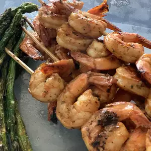

Marinated Grilled Shrimp

Description
A very simple and easy marinade that makes your shrimp so yummy you don't
even need cocktail sauce!
Don't let the cayenne pepper scare you, you don't even taste it. My 2 and
4 year-olds love it and eat more shrimp than their parents! It is also a
big hit with company, and easy to prepare. I make this with frozen or
fresh shrimp and use my indoor electric grill if the weather is not good
for outside grilling. Try it with a salad, baked potato, and garlic bread.
You will not be disappointed!!!
Ingridents
- 3 cloves garlic, minced
- ⅓ cup olive oil
- ¼ cup tomato sauce
- 2 tablespoons red wine vinegar
- 2 tablespoons chopped fresh basil
- ½ teaspoon salt
- 2 pounds fresh shrimp, peeled and deveined
- ¼ teaspoon cayenne pepper
- 6 each skewers
Steps
-
In a large bowl, stir together the garlic, olive oil, tomato sauce, and
red wine vinegar. Season with basil, salt, and cayenne pepper. Add
shrimp to the bowl, and stir until evenly coated. Cover, and refrigerate
for 30 minutes to 1 hour, stirring once or twice.
-
Preheat grill for medium heat. Thread shrimp onto skewers, piercing once
near the tail and once near the head. Discard marinade.
-
Lightly oil grill grate. Cook shrimp on preheated grill for 2 to 3
minutes per side, or until opaque.